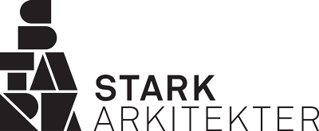
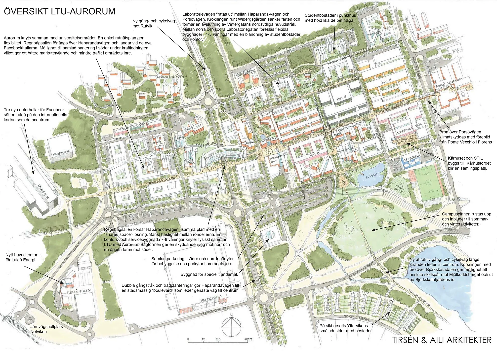

Utredning & program
Platsens förutsättningar, verksamhetens behov och projektets ambitioner blir grunden för det fortsatta arbetet.

Vi arbetar i alla skeden, från tidiga studier till fullständig A-projektering och projektledning.
Platsens förutsättningar, verksamhetens behov och projektets ambitioner blir grunden för det fortsatta arbetet.
Genom idé-, utvecklings- och exploateringsskisser undersöker vi möjligheter i såväl stadens skala som den enskilda byggnaden.
Vi utvecklar arkitekturen till fullständiga handlingar, där rumslig kvalitet, material och byggnadsdetaljer hänger ihop.
Samordning mellan kompetenser och ansvar för helheten genom projektering och uppföljning.
I stadsbyggnad och campusplanering arbetar vi med sambanden mellan byggnader, människor och gemensamma rum.

En vision och ett utvecklingsprogram för Campus LTU, med nya undervisningslokaler, företagslokaler och studentbostäder som knyter universitetet närmare staden.
Utforska projektetArkitekturen blir stark när idé, funktion och genomförande får utvecklas tillsammans.
Vi börjar med platsens förutsättningar och verksamhetens behov. Utredningar och programarbete ger riktning åt de första idéerna.
Skisser, fysiska modeller och digitala verktyg hjälper oss att pröva volym, rum och samband.
Genom A-projektering och samordning utvecklas idén till ett underlag som går att bygga efter.
Projekteringsledning, projektledning och uppföljning håller samman arbetet genom projektets olika skeden.
För frågor som rör konstruktion finns Stark Konstruktion. Kontoret nås på Storgatan 52B i Luleå.
info@starkkonstruktion.se